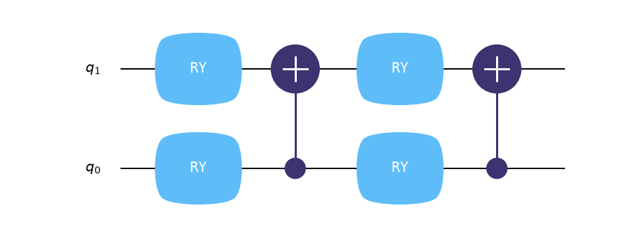
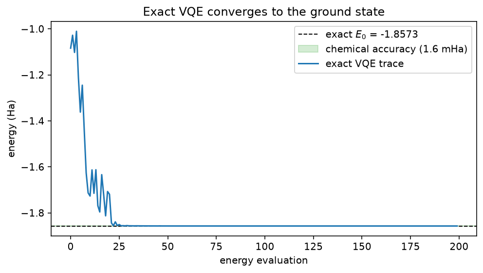
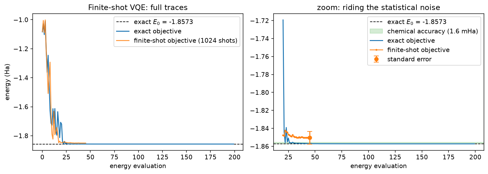
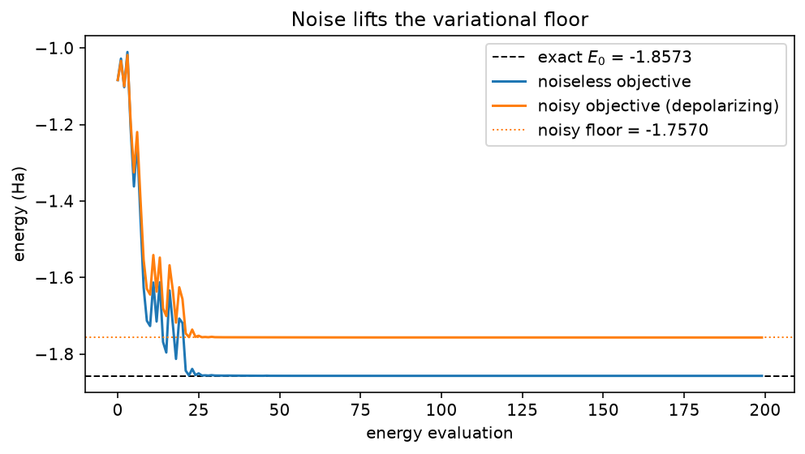

Find the ground-state energy of H₂ with VQE¶
-
Track
Algorithms
-
Downloads
The variational quantum eigensolver (VQE) estimates the ground-state energy of a Hamiltonian \(H\) by making the variational principle \(E(\theta) \geq E_0\) do the work: a parameterized circuit prepares \(|\psi(\theta)\rangle\), the energy
is evaluated on the quantum processor, and a classical optimizer walks \(\theta\) downhill. The lowest energy found is an upper bound on the true ground-state energy \(E_0\).
This tutorial runs the full loop on the smallest interesting chemistry example: molecular hydrogen in the STO-3G basis, reduced to two qubits by qubit tapering (the form used in O'Malley et al., arXiv:1512.06860). The Hamiltonian is a sum of five Pauli terms,
so the energy is a weighted sum of expectation values — exactly what an Estimator computes against one circuit evaluation.
The tutorial source contains three executable acts:
- Exact VQE — the energy is evaluated exactly from the statevector, and COBYLA minimizes it. The convergence curve is compared against the exact ground energy, obtained here by dense diagonalization.
- Finite-shot VQE — the same loop, but every expectation is estimated from 1024 shots, with the statistical standard error made explicit.
- VQE under noise — a depolarizing noise model is attached to the simulator, and the energy floor moves up: a two-line summary of why NISQ chemistry is hard.
Everything is seeded and runs in seconds on a laptop CPU.
The Hamiltonian and its exact spectrum¶
The five Pauli terms are inlined as data. Pauli strings follow the convention leftmost character =
qubit 0: IZ acts with \(Z\) on qubit 1.
The exact ground energy is obtained by dense diagonalization of the 4x4 matrix. It serves two purposes: the reference line on the convergence plots, and a reminder that the variational principle bounds the lowest eigenvalue — the other three are printed for context.
import matplotlib.pyplot as plt
import numpy as np
from scipy.optimize import minimize
import fatqat as fq
import fatqat.operations as op
H2_TERMS = [
# (Pauli string, coefficient); leftmost character acts on qubit 0.
("II", -1.052373245772859),
("IZ", +0.39793742484318045),
("ZI", -0.39793742484318045),
("ZZ", -0.01128010425623538),
("XX", +0.18093119978423156),
]
PAULI = {
"I": np.eye(2),
"X": np.array([[0, 1], [1, 0]]),
"Y": np.array([[0, -1j], [1j, 0]]),
"Z": np.array([[1, 0], [0, -1]]),
}
# np.kron's first factor matches FATQAT public qubit 0.
H_MATRIX = sum(
coeff * np.kron(PAULI[pauli[0]], PAULI[pauli[1]]) for pauli, coeff in H2_TERMS
)
eigenvalues = np.linalg.eigvalsh(H_MATRIX)
E0 = eigenvalues[0]
print("exact spectrum:", np.round(eigenvalues, 5))
print(f"ground-state energy E0 = {E0:.5f} Ha")
CHEMICAL_ACCURACY = 1.6e-3 # 1.6 mHa, the conventional accuracy target
Runtime result
exact spectrum: [-1.85728 -1.24458 -0.88272 -0.22491]
ground-state energy E0 = -1.85728 Ha
The identity term has expectation 1 in every state, so it folds into a constant offset. The optimizer only ever sees the four non-identity expectations:
OFFSET = H2_TERMS[0][1] # the II coefficient
COEFFS = np.array([coeff for pauli, coeff in H2_TERMS[1:]])
The Hamiltonian as observables¶
Each non-identity Pauli term becomes one fq.Observable, built with
from_sparse: only the non-identity factors are named, as explicit
(pauli, (qubit,), coefficient) entries. The explicit qubit index
sidesteps the string-endianness trap noted above (IZ means Z on
qubit 1). One entry is a product — ("ZZ", (0, 1), 1.0) is the
single term \(Z_0 Z_1\), while two entries would sum. Every
observable carries coefficient 1.0; the Hamiltonian coefficients live
in COEFFS and are applied classically, so the energy is OFFSET
plus the weighted sum of the four expectations.
NUM_QUBITS = 2
NUM_ROUNDS = 2
OBSERVABLES = [
fq.Observable.from_sparse([("Z", (1,), 1.0)], num_qubits=NUM_QUBITS), # IZ
fq.Observable.from_sparse([("Z", (0,), 1.0)], num_qubits=NUM_QUBITS), # ZI
fq.Observable.from_sparse([("ZZ", (0, 1), 1.0)], num_qubits=NUM_QUBITS),
fq.Observable.from_sparse([("XX", (0, 1), 1.0)], num_qubits=NUM_QUBITS),
]
The ansatz: a parameterized template¶
THETA is a fq.ParameterVector of length 4 — a group of named
placeholders. build_template() assembles the two-qubit ansatz with
the placeholders in place of angles: two layers, each applying RY
on both wires (one parameter each) and closing with CX from qubit 0
to qubit 1. The template is built once; binding it returns a new
program and never mutates it.
Because the Hamiltonian is real, its ground state can be chosen real,
and four RY angles interleaved with an entangler span every real
two-qubit state — so this ansatz can reach \(E_0\) in principle.
THETA = fq.ParameterVector("theta", 4)
def build_template():
program = fq.Program(NUM_QUBITS)
for r in range(NUM_ROUNDS):
for q in range(NUM_QUBITS):
program.add(op.RY(THETA[r * NUM_QUBITS + q]), q)
program.add(op.CX, (0, 1))
return program
template = build_template()
The template draws like any other program: two layers of
parameter-bearing RY rotations, each closed by the entangler.
figure = template.draw("matplotlib")
figure.set_size_inches(10, 3)
Runtime result

The exact energy function¶
One energy evaluation binds the template at the current parameters —
Estimator.run rejects programs that still contain unbound
parameters — then evaluates all four observables against a single
evolution. With shots=0, the Estimator default, the expectations
are exact; the energy is their weighted sum plus the identity offset.
ESTIMATOR_SV = fq.Estimator(fq.simulator.Simulator(method="SV"))
def energy_exact(theta):
"""Exact energy of the ansatz at ``theta``"""
bound = template.assign_parameters({THETA: theta})
expectations = ESTIMATOR_SV.run(bound, OBSERVABLES).result().get_expectation()
return float(OFFSET + COEFFS @ expectations)
Optimization¶
COBYLA minimizes the black-box energy from a small random start — no gradients needed. The trace is recorded for the convergence plot.
rng = np.random.default_rng(0)
x0 = rng.uniform(-0.1, 0.1, 4)
def _trace(energy, theta, trace):
value = energy(theta)
trace.append(value)
if len(trace) % 25 == 0:
print(f"eval {len(trace):4d} energy {value:.5f}")
return value
trace_exact = []
result_exact = minimize(
lambda theta: _trace(energy_exact, theta, trace_exact),
x0,
method="COBYLA",
options={"maxiter": 200, "rhobeg": 0.5},
)
print(f"exact VQE minimum {result_exact.fun:.5f} Ha "
f"(error {result_exact.fun - E0:+.5f} Ha)")
Runtime result
eval 25 energy -1.85521
eval 50 energy -1.85715
eval 75 energy -1.85720
eval 100 energy -1.85725
eval 125 energy -1.85727
eval 150 energy -1.85727
eval 175 energy -1.85727
eval 200 energy -1.85727
exact VQE minimum -1.85727 Ha (error +0.00000 Ha)
fig, ax = plt.subplots(figsize=(7, 4))
ax.axhline(E0, color="k", ls="--", lw=1, label=f"exact $E_0$ = {E0:.4f}")
ax.axhspan(E0, E0 + CHEMICAL_ACCURACY, color="tab:green", alpha=0.2,
label="chemical accuracy (1.6 mHa)")
ax.plot(trace_exact, label="exact VQE trace")
ax.set_xlabel("energy evaluation")
ax.set_ylabel("energy (Ha)")
ax.set_title("Exact VQE converges to the ground state")
ax.legend()
fig.tight_layout()
Runtime result

Finite-shot expectations¶
The same energy, estimated the way hardware would deliver it: every
expectation comes from 1024 measurement shots. shots is a per-run
option, not an estimator property, so the same estimator serves exact
and sampled evaluations. An explicit simulation_config={"seed": ...}
reuses the same randomness at every evaluation, keeping the optimizer's
landscape deterministic. sampled_std propagates the per-observable
standard errors (get_standard_error()) through the weights in quadrature —
\(\sigma_E = \sqrt{\sum_i c_i^2 \sigma_i^2}\) — the scale of the
error bar on the noisy objective.
def energy_sampled(theta):
"""Finite-shot energy of the ansatz at ``theta``."""
bound = template.assign_parameters({THETA: theta})
expectations = (
ESTIMATOR_SV.run(
bound, OBSERVABLES, shots=1024, simulation_config={"seed": 7}
)
.result()
.get_expectation()
)
return float(OFFSET + COEFFS @ expectations)
def sampled_std(theta):
"""Standard error of the finite-shot energy."""
bound = template.assign_parameters({THETA: theta})
std = (
ESTIMATOR_SV.run(
bound, OBSERVABLES, shots=1024, simulation_config={"seed": 7}
)
.result()
.get_standard_error()
)
return float(np.sqrt(COEFFS**2 @ std**2))
The same COBYLA run, now optimizing the noisy objective. Note that what matters at the end is the exact energy of the point found — the shot noise only steers the search.
trace_sampled = []
result_sampled = minimize(
lambda theta: _trace(energy_sampled, theta, trace_sampled),
x0,
method="COBYLA",
options={"maxiter": 200, "rhobeg": 0.5},
)
final_exact = energy_exact(result_sampled.x)
final_std = sampled_std(result_sampled.x)
print(f"finite-shot VQE stopped at {result_sampled.fun:.5f} ± {final_std:.5f} Ha")
print(f"exact energy at that point: {final_exact:.5f} Ha "
f"(error {final_exact - E0:+.5f} Ha)")
Runtime result
eval 25 energy -1.84443
finite-shot VQE stopped at -1.85051 ± 0.00700 Ha
exact energy at that point: -1.85082 Ha (error +0.00646 Ha)
fig, (ax, ax_zoom) = plt.subplots(1, 2, figsize=(11, 4))
ax.axhline(E0, color="k", ls="--", lw=1, label=f"exact $E_0$ = {E0:.4f}")
ax.plot(trace_exact, label="exact objective")
ax.plot(trace_sampled, alpha=0.8, label="finite-shot objective (1024 shots)")
ax.set_xlabel("energy evaluation")
ax.set_ylabel("energy (Ha)")
ax.set_title("Finite-shot VQE: full traces")
ax.legend()
cut = 20 # skip the initial transient
ax_zoom.axhline(E0, color="k", ls="--", lw=1, label=f"exact $E_0$ = {E0:.4f}")
ax_zoom.axhspan(E0, E0 + CHEMICAL_ACCURACY, color="tab:green", alpha=0.2,
label="chemical accuracy (1.6 mHa)")
ax_zoom.plot(range(cut, len(trace_exact)), trace_exact[cut:],
label="exact objective")
ax_zoom.plot(range(cut, len(trace_sampled)), trace_sampled[cut:],
alpha=0.8, marker=".", ms=4, label="finite-shot objective")
ax_zoom.errorbar(
len(trace_sampled) - 1,
trace_sampled[-1],
yerr=final_std,
fmt="o",
color="tab:orange",
capsize=4,
label="standard error",
)
ax_zoom.set_xlabel("energy evaluation")
ax_zoom.set_title("zoom: riding the statistical noise")
ax_zoom.legend()
fig.tight_layout()
Runtime result

A depolarizing noise model¶
Noise is declared independently of the program: a fq.NoiseModel
holds physical declarations — here fq.noise.Depolarizing after every
RY (\(p = 0.01\)) and, more strongly, after every CX
(\(p = 0.05\)) — and the same template runs on a density-matrix
simulator constructed with that model. A density-matrix Estimator in
shots=0 mode returns the noise-averaged expectation exactly: no
sampling is needed to see the noise. See
ideal and noisy execution for the full workflow.
noise = fq.NoiseModel()
noise.add(fq.noise.Depolarizing(p=0.01), operation=op.RY)
noise.add(fq.noise.Depolarizing(p=0.05), operation=op.CX)
ESTIMATOR_NOISY = fq.Estimator(fq.simulator.Simulator(method="DM", noise=noise))
def energy_noisy(theta):
"""Noise-averaged energy of the ansatz at ``theta``."""
bound = template.assign_parameters({THETA: theta})
expectations = ESTIMATOR_NOISY.run(bound, OBSERVABLES).result().get_expectation()
return float(OFFSET + COEFFS @ expectations)
First, the degradation: the exact-VQE minimum is re-evaluated under noise. Then COBYLA re-optimizes under noise — and recovers essentially nothing: a variational ansatz cannot rotate unital noise away, so the lifted floor is there to stay (it can only be mitigated classically, not optimized away).
degraded = energy_noisy(result_exact.x)
print(f"noiseless minimum under noise: {degraded:.5f} Ha "
f"(shift {degraded - result_exact.fun:+.5f} Ha)")
trace_noisy = []
result_noisy = minimize(
lambda theta: _trace(energy_noisy, theta, trace_noisy),
x0,
method="COBYLA",
options={"maxiter": 200, "rhobeg": 0.5},
)
print(f"noisy VQE minimum {result_noisy.fun:.5f} Ha "
f"(error vs. E0 {result_noisy.fun - E0:+.5f} Ha)")
Runtime result
noiseless minimum under noise: -1.75682 Ha (shift +0.10045 Ha)
eval 25 energy -1.75526
eval 50 energy -1.75661
eval 75 energy -1.75679
eval 100 energy -1.75685
eval 125 energy -1.75688
eval 150 energy -1.75691
eval 175 energy -1.75694
eval 200 energy -1.75697
noisy VQE minimum -1.75697 Ha (error vs. E0 +0.10031 Ha)
fig, ax = plt.subplots(figsize=(7, 4))
ax.axhline(E0, color="k", ls="--", lw=1, label=f"exact $E_0$ = {E0:.4f}")
ax.plot(trace_exact, label="noiseless objective")
ax.plot(trace_noisy, label="noisy objective (depolarizing)")
ax.axhline(result_noisy.fun, color="tab:orange", ls=":", lw=1,
label=f"noisy floor = {result_noisy.fun:.4f}")
ax.set_xlabel("energy evaluation")
ax.set_ylabel("energy (Ha)")
ax.set_title("Noise lifts the variational floor")
ax.legend()
fig.tight_layout()
Runtime result

Where to go from here¶
- Bigger molecules need a chemistry package to produce the Pauli sum and a physically motivated ansatz (e.g. UCCSD) instead of the hardware-efficient one used here.
- On larger systems, the bitstrings sampled from the optimized state can be post-processed classically (sample-based quantum diagonalization) — overkill at two qubits, where the sampled subspace is the whole space.